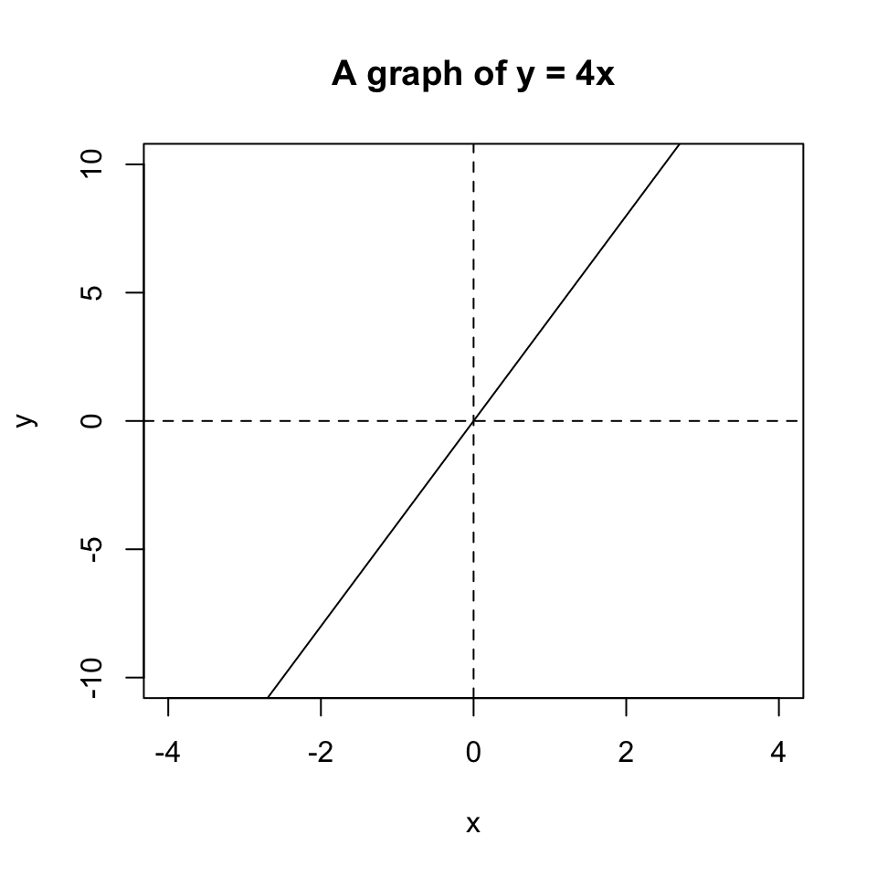
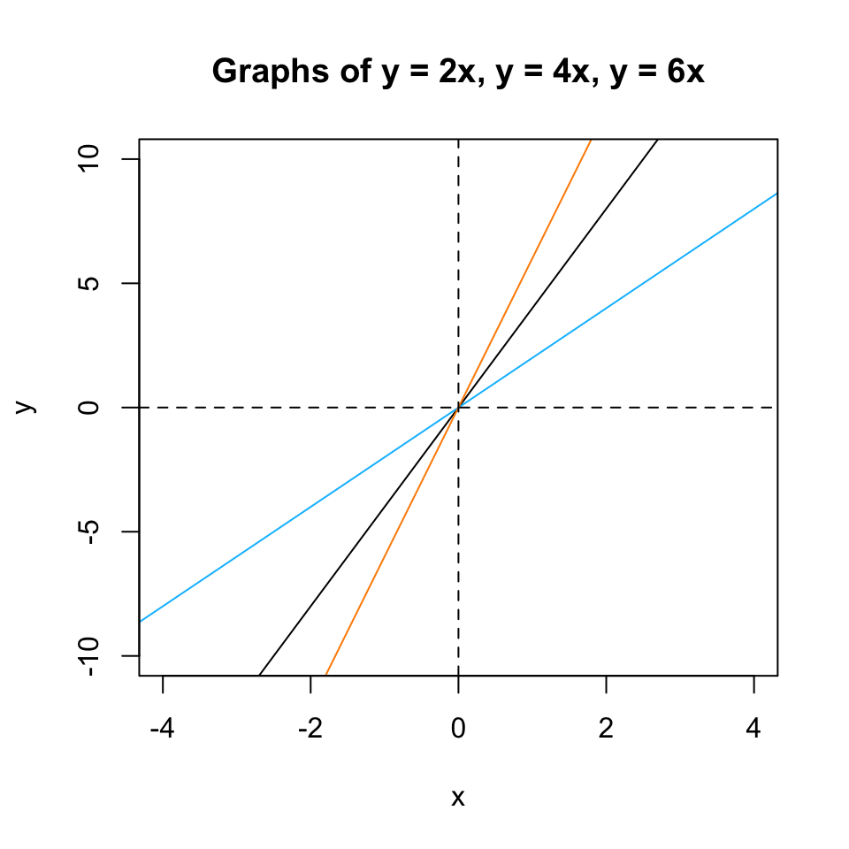
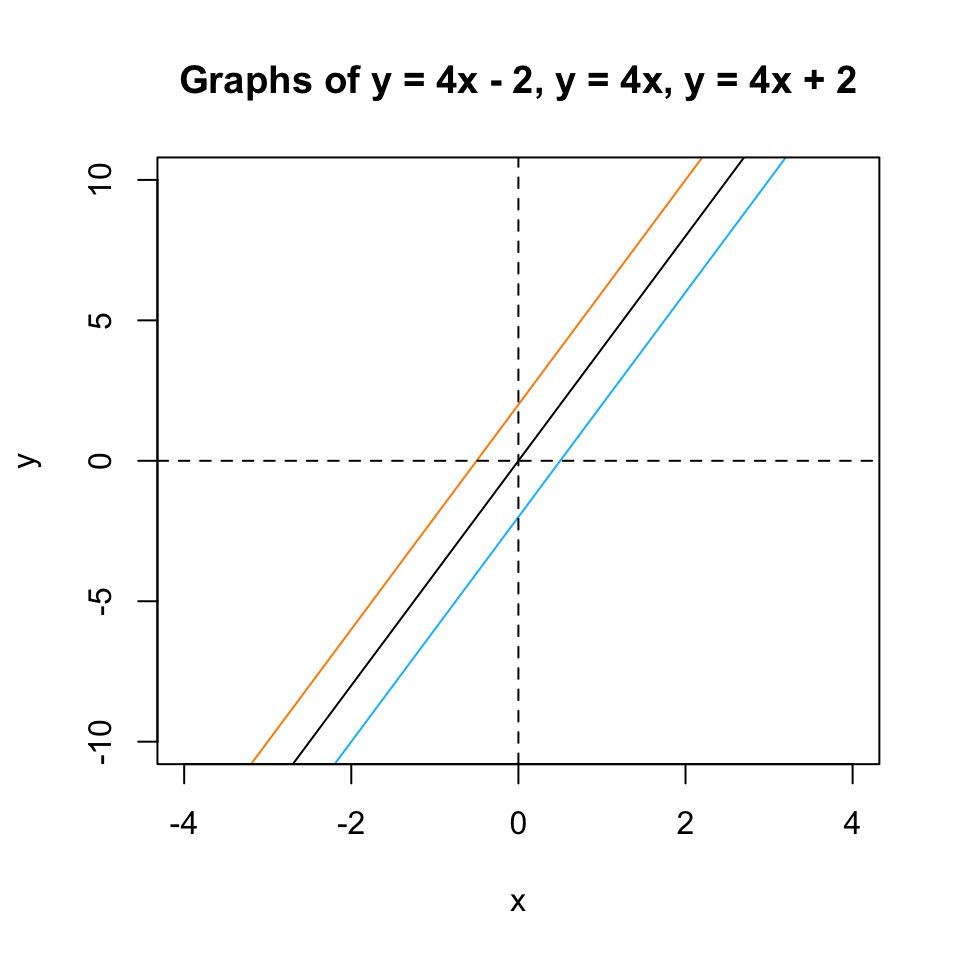
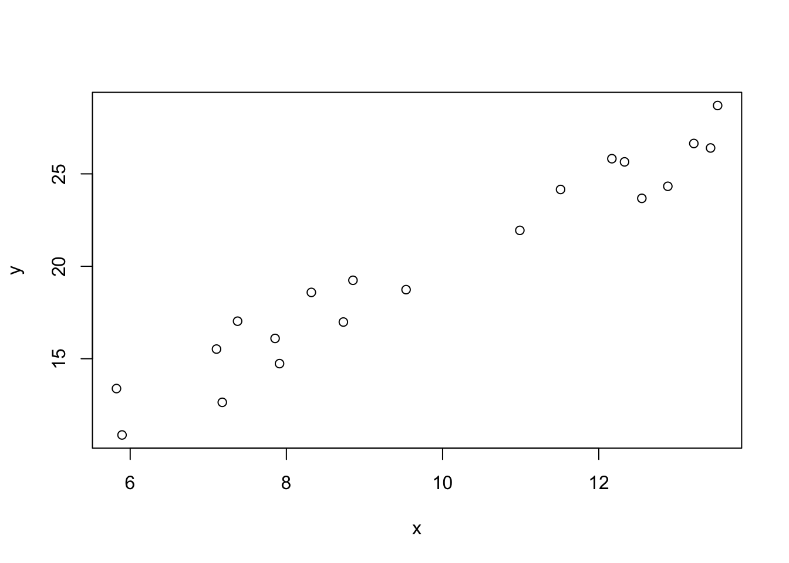
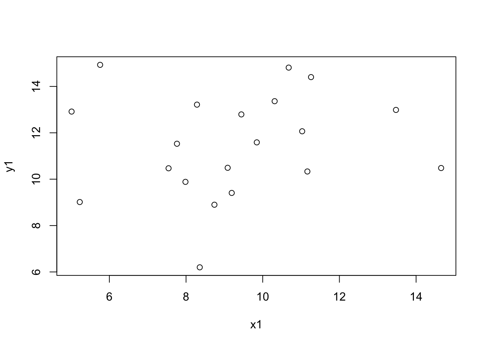
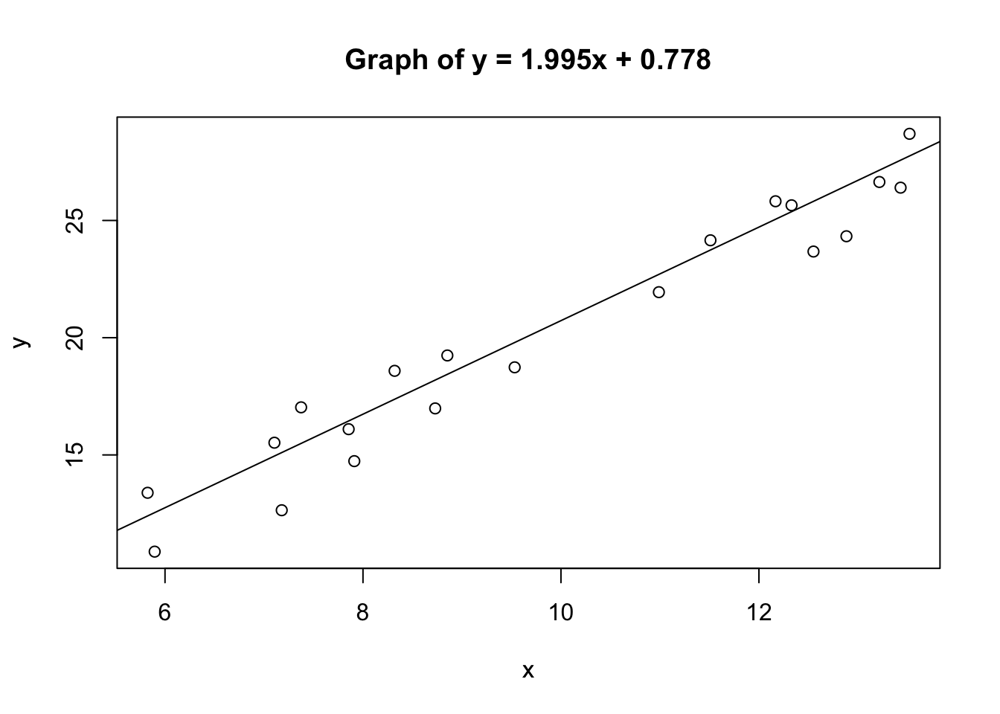
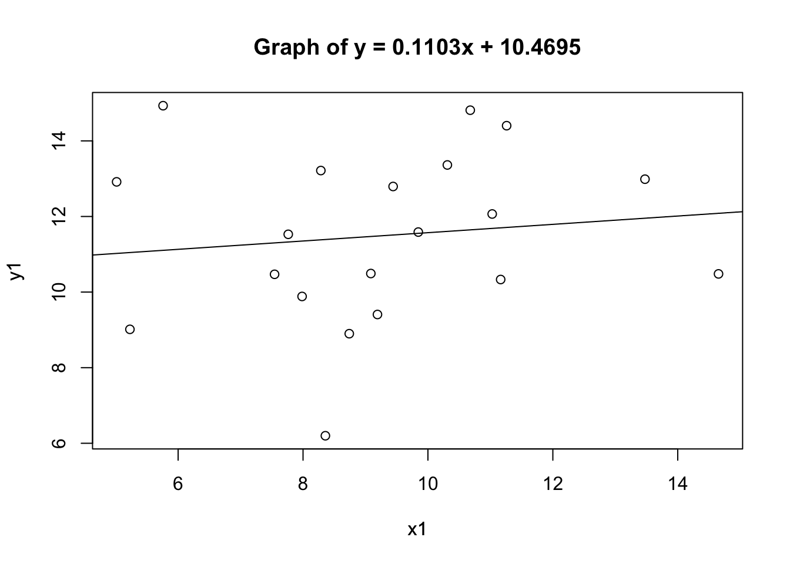
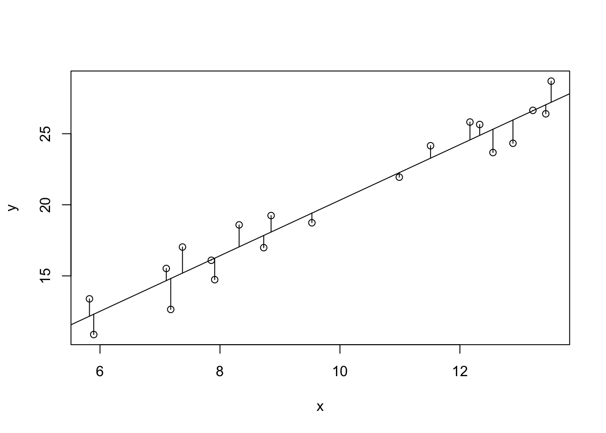
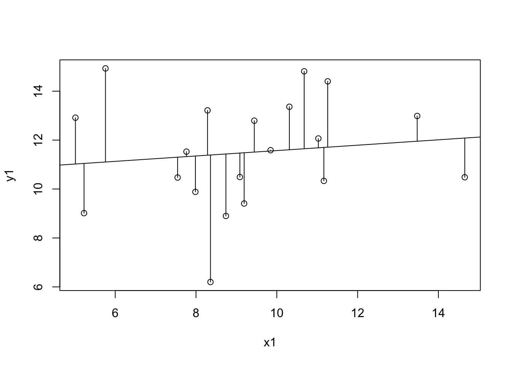
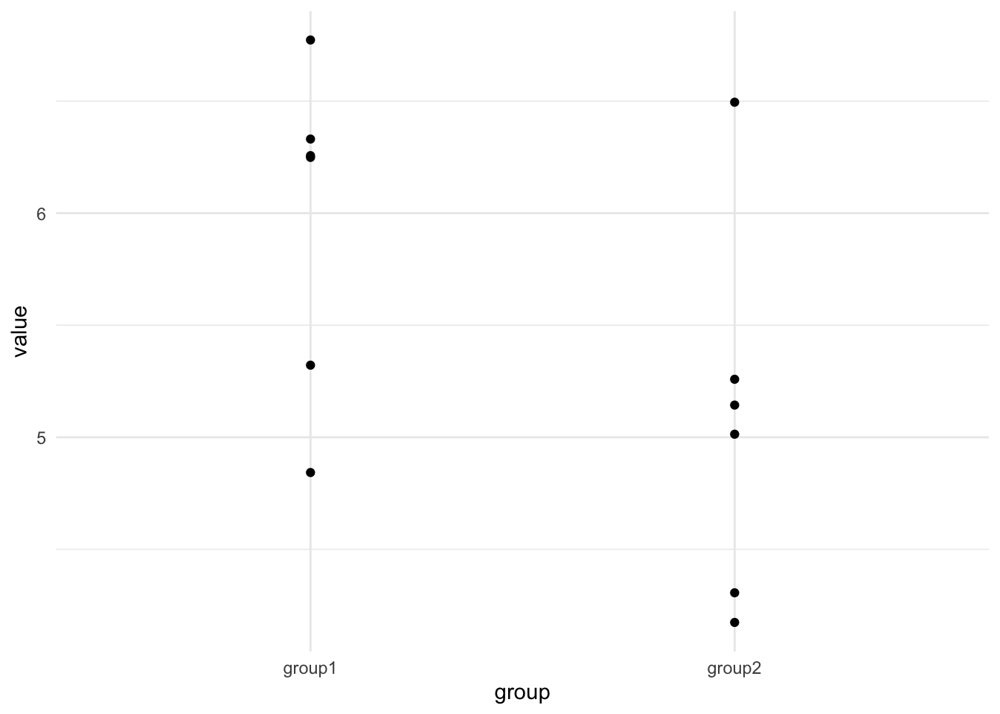

Chapter 3 The Linear Model
3.1 Straight line relationships are described using two parameters
Its all about \(y = ax + b\) (or \(y = mx + c\), depending on where you went to school). These two equivalent formulae are the standard high-school equations for describing a straight line. They represent how the quantity \(y\) changes as \(x\) does.
As a refresher, \(a\) tells us how much \(y\) increases for every unit increase in \(x\). Here’s an example for the equation \(y = 4x\)

If we play about with that value, the slope of the line changes, the \(b\) term is known as the slope, or gradient, or more often because it is just a multiplier of \(x\) its called the coefficient. Here’s some different coefficients just to prove that point

The \(b\) part of the formula just tells us how much we add on to \(y\) after we’ve calculated the coefficient effect. It has the effect of pushing the line up and down the y-axis. When we look at the value of \(y\) for \(x = 0\) we get the position that the graph hits the y-axis so this number is often called the intercept. Here’s a set of lines to show that.

That’s all we need to know about the equation of the straight line. Now we need to look at how they’re a useful tool when analysing experimental data.
TODO: TASK
3.2 Linear models try to create a linear equation from data
In this section we’ll discuss what a linear model is, and how it is different yet related to the equation we’ve introduced above.
A linear model is a simplification of the relationship between some sets of numbers (in the simple case we will introduce here, it is two sets, but it can be more). At its heart is a straight line, with the equation we discussed above and a certain set of values for \(a\), the coefficient and \(b\), the intercept and some other statistics that describe the strength of the relationship.
Let’s walk through building one, graphically and in R.
First we need some sets of values, \(x\) and \(y\). Usually, these would be from an experiment, but here I’ll make some toy ones.

The graph shows 20 random \(x\) values between 5 and 15 plotted against 20 \(y\) values which are calculated as \(2x\) with a little random noise added. We can see that there is definitely a relationship (not least because we engineered it that way). The objective of the linear model is to quantify and describe the relationship in some way. Here’s where the linear equation comes in, if we could come up with a line that fitted through the data we could use the linear equation of that line to roughly describe - or model - our data. Skipping to the chase there is absolutely a way to get the line from the data. The methods are described in lots of statistics books so I won’t repeat them, but you may be familiar with the general methods, its the ‘line of best fit’ according to the ordinary least squares method. The function we need in R is lm() and it works like this
Thats it! The function lm() does the work, it takes a fairly odd syntax, though. The y ~ x bit is an R formula and describes the relationship you want to examine, you can read it as y depends on x. The y and x we’re referring to here are the two vectors of numbers we created and plotted above.
Looking at the function output we get this
##
## Call:
## lm(formula = y ~ x)
##
## Coefficients:
## (Intercept) x
## 0.778 1.955These are the intercept (\(b\)) and the coefficient of \(x\) (\(a\)) that we need to describe the line. So our data are described by the line \(y = 1.955x + 0.778\).
So this line is a model of the data, it’s a model in the sense that it is something that represents our data, but isn’t it. The line alone can be useful to teach us about our data, but there’s more to the linear model than just the line.
3.3 Linear models describe relationships between variables
Beyond working out the equation of the line, the linear model process aims to quantify and describe relationships between the variables in the data, in our toy example the variables are \(x\) and \(y\). Specifically when we say ‘relationship’, we mean whether a change in the value of \(x\) appears to go along with some change in the value of \(y\).
In other words, we can think of relationship as being the slope. If \(x\) causes some change in \(y\) when we plot it then there must be a slope. We call the slope \(a\) in our equation of a line and we call it the coefficient of the \(x\) term in our linear model. These are all equivalent interpretations for our purposes, slope, relationship, coefficient and \(a\) just mean that $
Linear models calculate statistics to help us decide whether the coefficient/slope/\(a\) of the relationship we observe is important or not.
3.4 Not all lines of best fit are equally good
Although a line of best fit can always be calculated, the line might not be worth much. Consider two sets of very similar numbers. Here’s two vectors of random numbers with the same mean and their plot.

We can definitely calculate a line that fits these,
##
## Call:
## lm(formula = y1 ~ x1)
##
## Coefficients:
## (Intercept) x1
## 10.4695 0.1103and it would be \(y = 0.1103x + 10.6495\). But if we compare the fit of those lines, like in these plots

we can clearly see that not all lines are created equal. The first line fits the data much more closely than the second one. We can also see that the relationship between \(x\) and \(y\) is much weaker in the second set than in the first (the coefficient/slope/\(a\) is weaker. So a sensible linear model of our data would give us not just the equation but also measures of the believability of the line.
3.5 Linear models contain statistics describing the goodness of the model
The same function we’ve already used - lm() - calculates certain statisitics. We can print them using the summary() function.
##
## Call:
## lm(formula = y ~ x)
##
## Residuals:
## Min 1Q Median 3Q Max
## -2.17560 -1.00570 -0.01092 1.17016 1.83047
##
## Coefficients:
## Estimate Std. Error t value Pr(>|t|)
## (Intercept) 0.7780 1.1442 0.68 0.505
## x 1.9555 0.1122 17.42 1.03e-12 ***
## ---
## Signif. codes: 0 '***' 0.001 '**' 0.01 '*' 0.05 '.' 0.1 ' ' 1
##
## Residual standard error: 1.303 on 18 degrees of freedom
## Multiple R-squared: 0.944, Adjusted R-squared: 0.9409
## F-statistic: 303.6 on 1 and 18 DF, p-value: 1.027e-12This output is verbose, there are four blocks.
Model Call- just a restatment of the function we calledResiduals- a set of measures of the distribution of the residuals, we don’t worry about this yet.Coefficients- the terms of the equation and their statistics; so the intercept (\(b\)) and the coefficient ofx(\(a\)) that we’ve already seen and theEstimate(computed values of those). We see also columns of statistics for each.- The model level statistics summary - some statistics that apply to the whole model.
Let’s start at the bottom and look at model level summary.
3.5.1 Residual Standard Error
This is the measure of how well the line fits the data. Unlike the linear equation, the linear model has an extra error term, \(e\) which represents the average distance from the actual measurments to the line in the y-axis. So in a linear model we have a formula that looks like this
\[\begin{equation} y = ax + b + e \end{equation}\]
The \(e\) term adds something onto the y value of the whole equation; the more we need to add on to the value of the \(x\) from the line to get the real \(y\). Logically, the bigger \(e\) is the more the error in the model overall.
If you look at the plots again with those distance drawn in you can see quite clearly the residual error for the second model is much bigger than for the first.

3.5.2 \(R^2\)
\(R^2\) is a measure of how well the model fits the data. If you’re thinking correlation coefficient here, then you’re in the right area. \(R^2\) describes the proportion of variance in the \(y\) values that can be explained by the \(x\) values. The \(R^2\) always falls between 0 and 1. Closer to 1 is usually better, but it is very domain and dataset dependent. With small and biological data sets, we don’t always see values close to that because of the noise of the system.
The proper one to use in most cases is the Adjusted R-squared.
3.5.3 \(R^2\) versus Residual Standard Error
So what’s the difference between these two - at first glance they do the same thing. The major difference is that RSE is in the units of the data and \(R^2\) is in relative units, so you can use them in different situations e.g if you want to make your model work within particular tolerances or you want to compare models in different units.
3.5.4 \(F\)-Statistic
The \(F\)-Statistic is an indicator of a relationship between the \(x\) and \(y\) values of the model. In effect its testing how much better the relationship is in your model relative to a model in which the relationship is completely random. When the \(F\)-statistic is at 1, the relationship is no stronger than a random relationship. The further above 1 this value is, the more it is likely there is a real relationship in the model. The \(p\) value here is the \(p\) that this size of \(F\) would occur in a random relationship with a similar dataset size. As with the other statistics, the size of \(F\) is dependent on the domain and data being analysed.
3.6 Coefficients have statistics
Along with these model level statistics, linear modelling with lm() gives us a set of statistics per coefficient. These measure the effect that each coefficient has.
3.6.1 Estimate
These are the Estimate, which is the actual value of the coefficient from the model. We will see that along with Intercept we can have models with more than one other coefficient. These are given in the units of the data.
3.6.2 Std. Error
A measure of the variability of the strength of the effect, so if some \(x\) points give more pronounced \(y\) values at similar coefficient values, you get a higher variability of the strength. Generally lower standard error of the coefficient is good.
3.6.3 \(t\)-value
An estimate of how extreme the coefficient value is, basically how many Standard Deviations away the estimate is from the centre of a presumed normal distribution with mean 0. It is absolutely a \(t\)-test \(t\)-value, and like in a \(t\)-test we want it to be high. The higher \(t\) is, then the more likely that the coefficient is not at 0.
3.6.3.1 Wait, what?
Why would we care whether the coefficient is at 0 or not? Well, because if it is 0, then it’s having no effect on the model. Consider again the equation of a line
\[\begin{equation} y = ax + b \end{equation}\]
If we let the coefficient \(a = 0\), this happens
\[\begin{equation} y = 0 x + b\\ y = b \end{equation}\]
The coefficient disappears, its having no effect!
If the coefficient is not many standard deviations away from 0, its probably not having much effect on the relationship. The \(t\) value tries to work out whether, given the data, the coefficient is in anyway different to 0.
In English, we are really saying that the size if the slope is not likely to be 0. That it is not likely that there is no relationship. Which is weak inference, but is exactly the same sort of inference that all the other hypothesis test make and is exactly the same interpretation
pull_out A lot of researchers get the impression that \(t\)-tests, ANOVAs and other hypothesis tests tell you whether something is signifcant with probability \(p\). This is a massive misinterpretation. They do no such thing.
In fact what a hypothesis test tells you is how often you’d see this difference between two means of some numbers if the real difference was 0.
This is resolutely not the same as saying they are definitely different. Just that they’re not likely to be the same as 0. The \(p\) in \(p\) value is usually taken to mean probability, but if it stands for anything it should be ‘probably not 0’.
Hypothesis testing like this has been criticised for being weak inference, and not without reason.
pull_out
Of course, this will depend on the size of the standard deviation. The noisier the data or the smaller the sample size then the larger this value will need to be to be important.
3.6.4 \(Pr(>|t|)\)
This weird shorthand expression is just giving the probability of getting a value larger than the \(t\)-value. This comes from a \(t\)-test within the model and takes into account the dataset size and variability, you can think of it as the \(p\)-value of a test asking whether the coefficient is equal to 0. So if \(p\) is less than 0.05 you can say that the value of the coefficient is not likely to be 0 and therefore is having an effect on the model.
3.7 A non-zero slope is what matters
By looking at the \(p\)-value of the coefficient then, we can see whether there is a significant relationship or, more accurately a non-zero slope
We can really emphasise by looking at the plots of lines we looked at earlier.


The slope of the second plot is weaker, it’s much flatter - much closer to zero, in fact given the spread of the data we aren’t that confident that it isn’t a flat (zero) slope, so we aren’t that confident that there is a significant relationship.
It is this feature that will help us in our overall goal of using the linear model in doing the work of all the other statistical tests we commonly use. If we have a good model and a good fit, then we can make really flexible use of the slope by looking at the significance of the coefficient.
3.8 Major points
After all that inspection of the linear model, here’s what you need to remember:
- Linear models describe relationships between sets of numbers (variables)
- The creation of the model generates statistics about the goodness of the model
- A non-zero coefficient (slope) means there is not likely to be no relationship (!)
Pretty soon, someone would’ve made some complaint about variability and that we should demonstrate the extent of that, something we might’ve done with error bars, and then someone like me would come along and say that even that isn’t optimal so you’d better use dots, like this:
